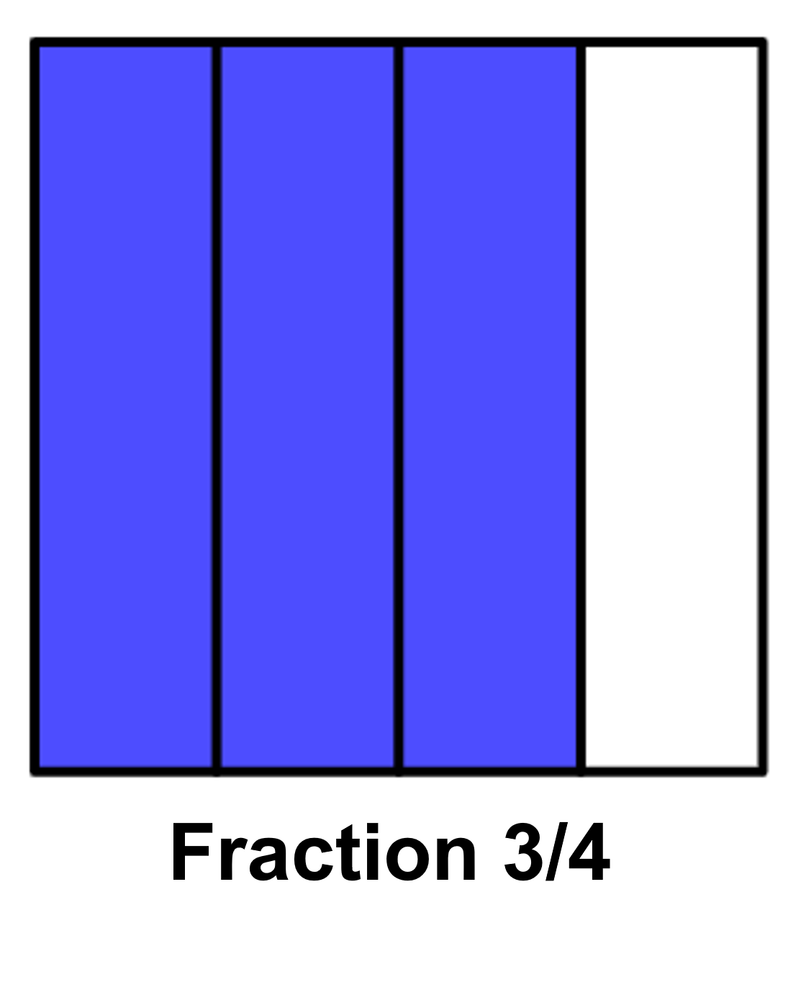
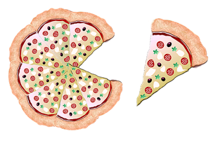
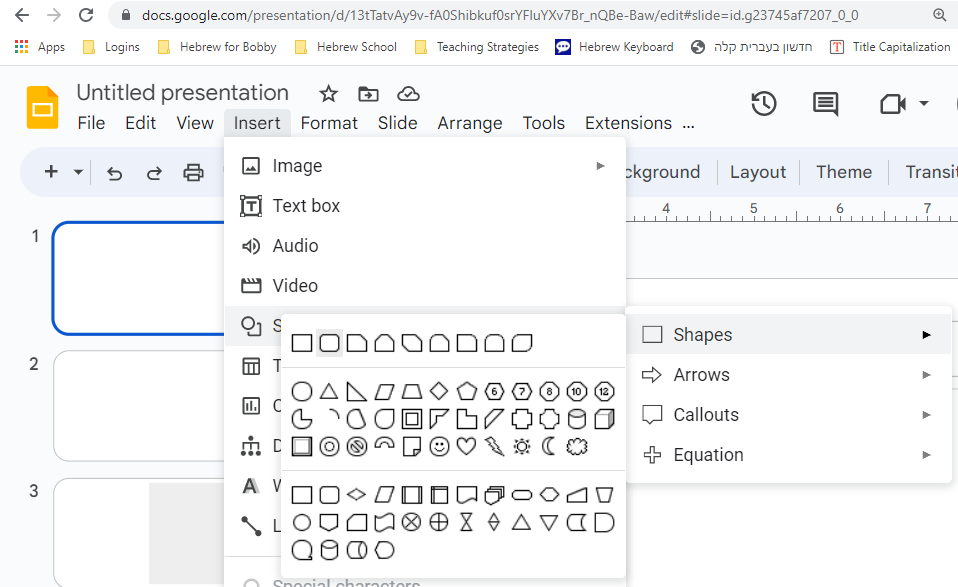
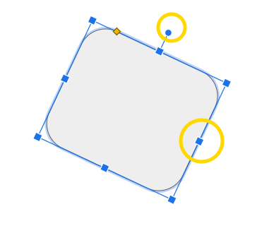
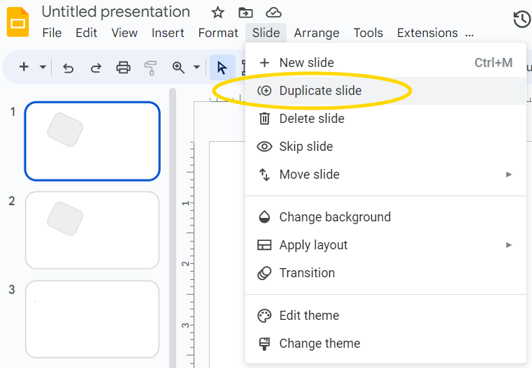
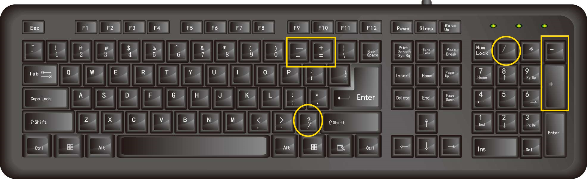

What You Should Know - Google Slides: Show and Tell Fractions
 Important Vocabulary
Important Vocabulary
- Fraction – a part of a whole
- Visual Fraction Model – a picture that shows fraction pieces, and helps us visualize, or see, how much we have, need, or want
- Numerator – the top number in a fraction; in the fraction , 1 is the numerator
- Denominator – the bottom number in a fraction; in the fraction , 4 is the denominator
Adding and Subtracting Fractions
To add or subtract fractions with the same denominators, add or subtract the numerators and keep the denominator the same.
For example, to add and , you would add 1 and 2 to get 3, and then keep the denominator 4, so the answer would be .
Here are the steps for adding and subtracting fractions with similar denominators:
- Identify the denominators of the fractions. (The denominator is the number on the bottom of the fraction.)
- Keep this number the same.
- Add or subtract the numerators. (The numerator is the number on the top of the fraction.)
Here are examples of adding and subtracting fractions with similar denominators:
Visual Fraction Models
Fractions show us a portion of a whole. Visual fraction models show fraction pieces and help us visualize, or see, how much we have, need, or want. A simple visual fraction model could simply be a shape broken up into equal parts. Here is an example of a square broken up into 4 equal parts. 3 of the 4 parts are colored in, so this Visual Fraction Model represents .

Visual fraction models can also be more elaborate. Here is a visual fraction model showing a pizza cut into 8 slices. When you remove 1 slice, you are taking of the pizza. This leaves you with of the pizza.

Using Google Slides
How to Insert and Modify Shapes in Google Slides
- Go to the Insert button and click Shape.
- Choose the category of shape that you want: Shapes, arrows, callouts, or equations.
- Select the shape you want.
- Click and drag on the slide to create the shape.
- To modify a shape, follow these steps:
- Select the shape you want to modify.
- Click and drag the shape to move it.
- Click and drag the squares on the sides and corners to resize, stretch, or shrink the shape.
- Click and drag the circle attached to the shape to rotate it.


How to Copy a Slide in Google Slides
If you want to make a slide that is very similar to a slide you already have, it may be easiest to copy the slide and then make the small changes.
- Click the Slide button.
- Select Duplicate slide.
- If you need to change the order of the slides, click on the slide thumbnail in the left-hand column and drag it where it needs to be.

How to Insert Fraction Equations into Google Slides
If you have the ability to install add-ons, then you may want to search for one that lets you type mathematical equations into Google Slides. If not, you can always use the symbols on your keyboard.
You can find the plus, minus, and equals symbols to the right of 0 on the main section of your keyboard. Most keyboards also have these symbols included on a number pad on the right side of the keyboard.
When it comes to fractions, you are probably most used to seeing them written with the numerator on top and the denominator on the bottom, like this:
However, fractions can also be written like this: 3/4
In both cases, the 3 is the numerator and the 4 is the denominator. The forward slash ( / ) can be found on the same key as the question mark ( ? ) and also above the 8 on the number pad to the right.

Tips for Good Visual Presentations
A good visual presentation helps the audience understand something new, and does it in a way that meets the audience’s needs or interests. Here are some tips to make your presentation successful:
- Think about your audience. What would keep their attention? How do they like to learn?
- Use language that is clear and to the point.
- Use font that is 24pt or larger so that it is easier to read.
- Include useful and relevant images.
Less is more. Too many pictures and words can be distracting.


Career Connection and Real-World Application
Careers Using Google Slides
Google Slides is an important tool for many careers. Sales professionals use it to create presentations that help them “close deals” (sell their products or services). They may also use Google Slides to train other sales representatives so that they know all the important information about what they need to sell.
Marketing professionals are responsible for finding ways to let potential customers know about their product or service. They may make Google Slides presentations about their company’s product or service, and may show these presentations to potential customers at tradeshows, on their website, or on social media to name a few places. They may also use Google Slides presentations to share information about their marketing campaigns (what they are doing to spread the word about their product or service) with others in their company.

Careers Using Fractions
Several careers use fractions regularly. Engineers use fractions when they calculate measurements, such as the dimensions of a skyscraper, or how much weight a bridge can hold. For example, an engineer might calculate the stress on a beam by dividing the weight of the beam by its length. In this case, the weight would be the numerator and the length would be the denominator.
Pastry chefs are bakers that focus on making desserts. A pastry chef uses fractions when measuring out ingredients such as flour and sugar. For example, a recipe may call for 1/3 cup of flour.
They also use fractions when increasing or decreasing a recipe. For example, a pastry chef may have a recipe for 36 cupcakes but expects that she will only need 24 cupcakes that day. She would need to know how to decrease the recipe so that she only prepares 2/3rds. Exact proportions and amounts are very important to baking since too much of an ingredient like flour could make baked goods too dense, hard, or tough. Too little flour can make the baked goods gummy or flat.